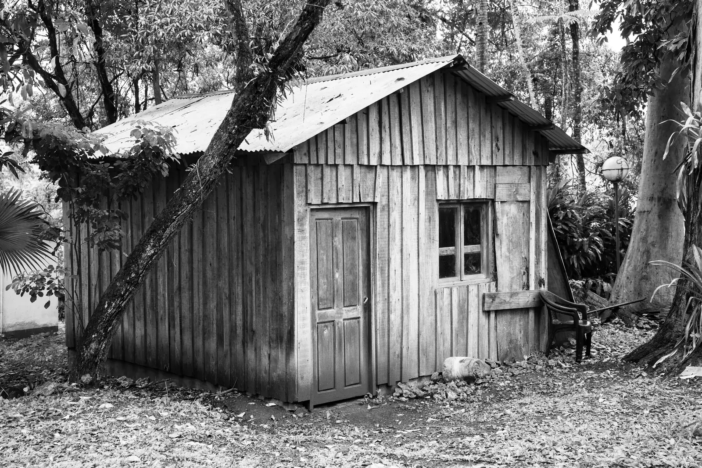
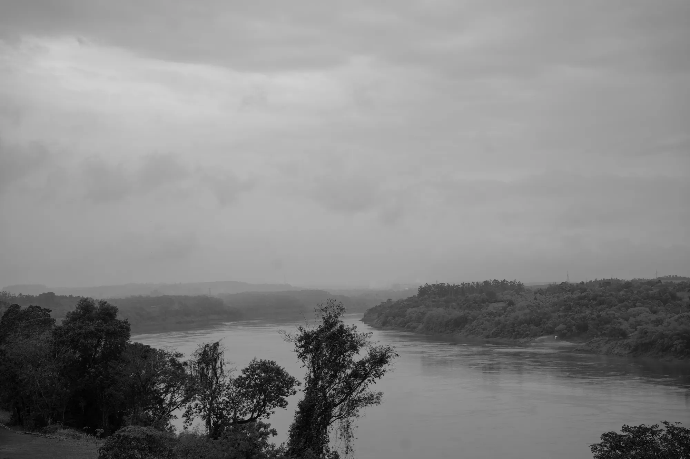
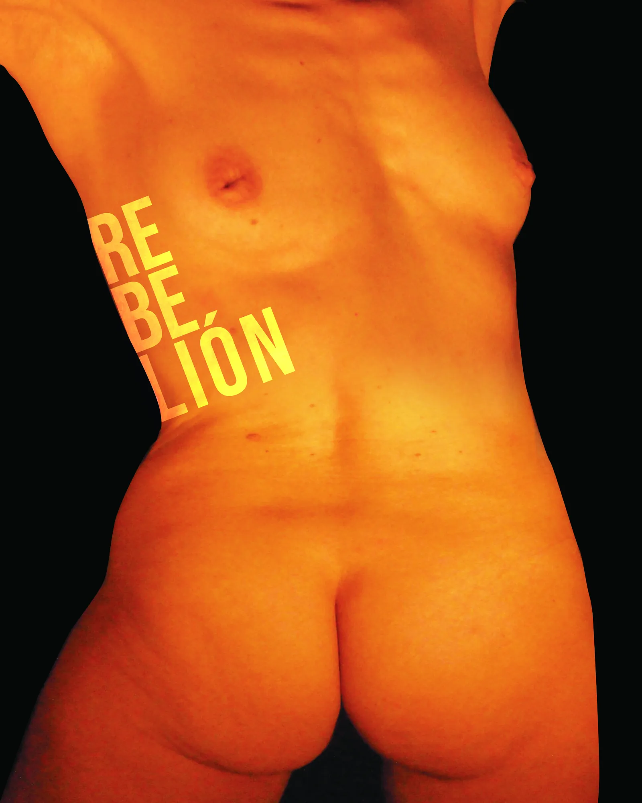

Obras en venta
Las series fotográficas de Soledad Imbach están disponibles como impresiones de autor. Todos los tamaños, con o sin marco. El tamaño, el tipo de impresión y el envío se coordinan directamente por mail.
Obra disponible para la venta. Precios a consultar. Consultar por mail.
Paisajes misioneros en blanco y negro





Cadáver Exquisito



Arrugas


¿Te interesa una obra? Escribí y la coordinamos: tamaño, impresión y envío. Consultar por mail.